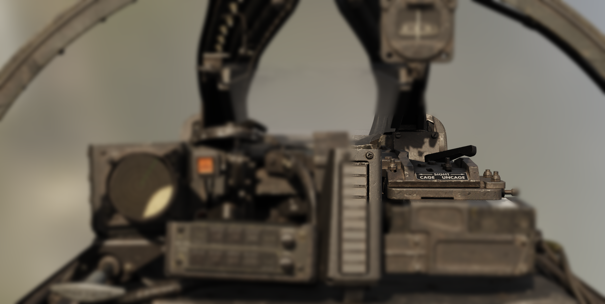
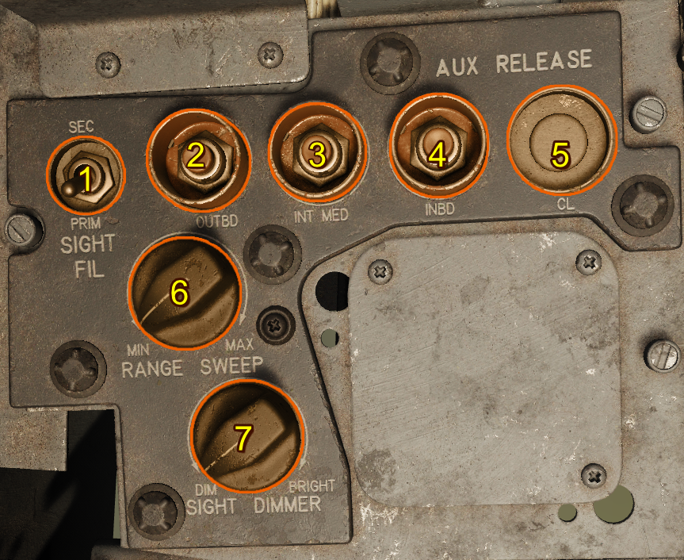
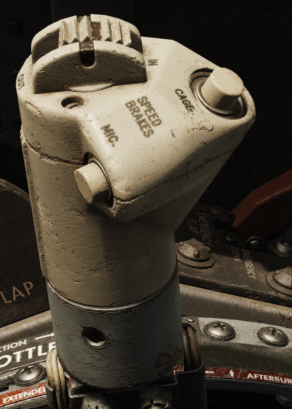
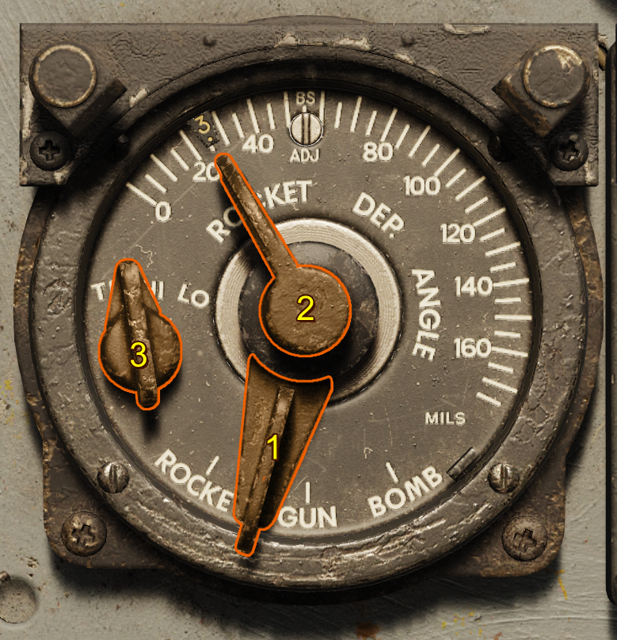

A-4 Gunsight

Introduction
The A-4 Gunsight is a lead computing optical sight. This system has a gyro to assist in computing the lead solution for aerial gunnery. It's primary input is the range which can be achieved either from the onboard APG-30 radar system or manually by the pilot using the optical sight to range.
The system can also be used for ground attack using either a fixed sight where pre-calculated depression tables can be used or the inbuilt automatic bombing mode.
Sight Lines
Fuselage Reference Line (FRL)
The defined reference line for pitch for the aircraft. Every other line is referenced from this line.
Mean Fixed Bore Line (MFBL)
The mean fixed bore line is a line drawn from the average position of the gun muzzles drawn parallel to the average boresight of the guns.
True 0 Prediction Sight Line (T0PSL)
The line drawn from the A-4 sight position parallel to the Mean Fixed Bore Line.
0 Prediction Sight Line (0PSL)
A line depressed by some angle from the True 0 Prediction Sight Line to harmonize this line and the Mean Fixed Bore Line at some distance usually 2000 ft.
Electrically Caged Sight Line (ECSL)
A line depressed by 1.1 mils from the 0 Predication Sight Line to account for bullet drop at approximately 850 feet.
This sight line is what is used when the sight is electrically or mechanically caged.
Controls
Mechanical Cage Lever
The mechanical cage lever cages the sight to the boresight. With the sight mechanically caged the reticule is fixed and the size of the reticule is determined by the wingspan lever.

Electrical Cage Button
Pressing the electrical cage button stabilizes the reticule by providing the fire control system with a range of 850 feet. The rigidity of the sight is increased to reduce reticule movement during hard maneuvering.
If this button is depressed the Sight Selector Switch automatically moves to the gun position.
Range Dial
The range dial indicates the current target range in feet being used by the sight. The source of this range can either be the radar or manually if the manual range setting is used.
Radar Range Sweep Knob
This is used to reduce the maximum lock-on distance for the radar to prevent the radar from locking onto undesirable objects.
| Range Limit | Setting (feet) |
|---|---|
| MIN | 3000 |
| MAX | 9000 |
The value linearly changes between the min and max settings.

Manual Ranging Control (Throttle)
The throttle grip is normally in the full counter-clockwise position for automatic radar ranging. Twisting the throttle grip clockwise decreases the range from the max manual range of 2700 feet to a minimum of 12000 feet.
To return the ranging to automatic operation simply rotate the throttle full counter-clockwise.

Wingspan Lever
The wingspan lever changes the size of the reticule to match the angular size of a target at the current indicated range. Setting this to the wingspan of the target can either confirm the radar ranging is correct or be used to manually range by changing the manual ranging until the pipper width matches the target.
Due to the added equipement in the F-100D there is a mechanical linkage which connects the interactable wingspan lever with the actual wingspan lever of the A-4 sight.
Radar Lock-On Light
When the radar range gate has achieved lock-on the lock light will illuminate.
Radar Reject Button
If the pilot wishes to reject the current radar lock (for example the current range is much lower or higher than the desired target range) the pilot can press the radar reject button. The radar will continue to increase scan range until it either finds a target or reaches max range where it will then begin the scan again at minimum range.
Pressing the radar reject button will cause the Sight Selector Switch to move to the guns position.
Sight Selector

1. Sight Selector Switch
There are three options rocket, gun, bomb.
| Mode | Range (feet) | Electrically Caged |
|---|---|---|
| Gun | range from radar or manual | Free to move unless electrical cage is depressed |
| Rocket | fixed 850 | Caged to ECSL + Depression Angle |
| Bomb | fixed 850 | Caged to ECSL + 10 degrees - used with automatic bombing mode |
If the radar reject button is depressed this switch automatically moves to the gun postion.
2. Sight Depression
This sets the depression from the boresight in NATO MILS when either in the rocket or bomb mode.
3. Target Speed Switch
This switch sets the effective velocity of the own aircraft and the closure rate for the sight calculations. Each setting is phrased in terms of the target velocity.
| Mode | Own Speed (knots) | Target Speed (knots) | Closure Rate (knots) |
|---|---|---|---|
| TR | 300 | 200 | 100 |
| HI | 600 | 500 | 100 |
| LO | 600 | 200 | 400 |
Operation
The A-4 gunsight can be used in either air to air or air to ground operation. To select the mode of operation the sight selector is used - each modes of operation are described below.
Gun (Air-to-Air)
With the sight selector in Gun and the sight mechanically uncaged the rate gyro inside the sight controls the pipper location to provide a gunnery solution based on the set range. The target speed switch should be set on the closest target speed: HI for High Speed Targets, LO for Low Speed Targets and TR for Tracking Shots where the attacking aircraft is similar speed to the target.
Ranging
The range is controlled either manually using the throttle twist or automatically by the radar.
The radar automatically locks onto any sufficiently strong reflections including the ground. The range is indicated on the range dial. If the range indicated is not that of the desired target, the target can be rejected using the radar reject button this will cause the range sweep to increase and look for targets, if no targets are found and the range sweep reaches the max range it will begin again at the minimum radar range.
The range can be validated in radar ranging or calculated in manual ranging mode by using the wingspan lever to set the wingspan of the current target on the gunsight. Then the target is at the correct range when the wingspan matches the inside radius of gunsight reticule tick marks.
Gunnery
In order to achieve accurate air-to-air gunnery the sight must be allowed to stabilise. The sight must be kept on the target for 1 - 2 seconds. This allows the gyro to settle on the correct solution for the current attack geometry, firing before the sight is stabilised will result in a miss.
Rocket (Air-to-Ground Manual)
With the sight selector in Rocket and the sight mechanically uncaged the Sight Depression controls the depression (in mils) of the pipper from the electrically caged sight line.
In this mode the sight can be used in this mode for manual bombing or rocket attacks.
Bomb (Air-to-Ground Automatic)
TODO: Note to self - If the armament selector is in BOMB/NAPALM and the sight is in manual, the sight will go out if the bomb arming knob is not set in an ARMED position.
TODO UPDATE: MAYBE it may depend on the version of the sabre.